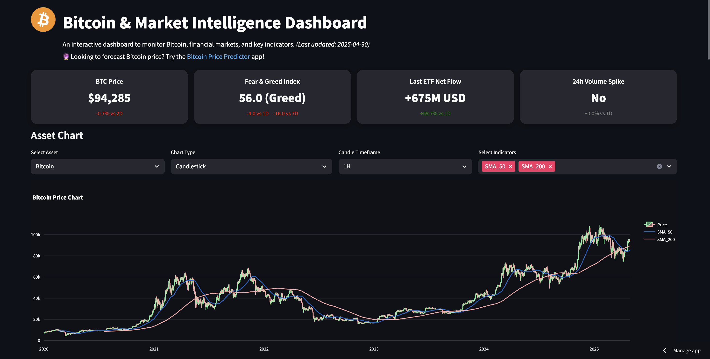

Project Overview
This dashboard provides an interactive visualization of Bitcoin alongside key financial assets such as the S&P 500, Nasdaq, Gold, and macroeconomic indicators. Built using Power BI, it offers insights into market trends, correlations, and technical analysis signals.
Features
- Live Bitcoin price tracking
- Comparison with traditional financial markets
- Technical indicators and macroeconomic overlays
Dashboard Preview
A preview of the dashboard is shown below:
